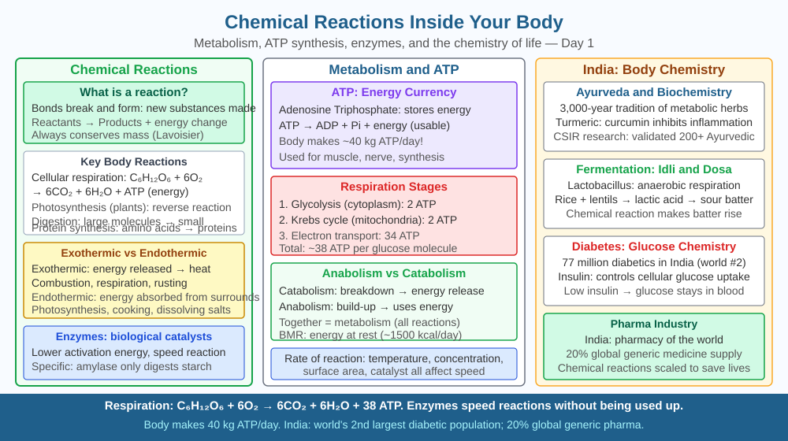

By the end of this lesson, you should be able to explain how cellular respiration converts glucose into ATP energy, name the reactants and products of the reaction, and predict what happens to metabolic reactions when body temperature drops significantly.
Right now, without any effort, your body is running thousands of chemical reactions simultaneously — converting food into movement, heat, thought, and new cells. You ate rice or roti a few hours ago. How does that solid food become the energy that lets your fingers move, your heart beat, and your brain think? And why does a high fever make you feel exhausted even if you haven't moved?
The central reaction powering your body is cellular respiration — specifically aerobic respiration, which occurs inside every living cell, primarily in organelles called mitochondria.
The overall equation is:
C₆H₁₂O₆ + 6O₂ → 6CO₂ + 6H₂O + ATP energy
Glucose (C₆H₁₂O₆) reacts with oxygen (O₂) to produce carbon dioxide (CO₂), water (H₂O), and — most importantly — ATP (adenosine triphosphate), the molecule your cells use as a direct energy currency.
This reaction does not happen in a single explosive step. It occurs in three carefully controlled stages, each catalysed by specific enzymes:
Stage 1 — Glycolysis (in the cytoplasm). One glucose molecule is split into two smaller molecules of pyruvate. This step releases a small amount of ATP (net gain of 2 ATP molecules) and does not require oxygen. This is why muscles can still function briefly without oxygen during intense exercise — they rely on glycolysis alone.
Stage 2 — Krebs cycle (in the mitochondrial matrix). Pyruvate is converted into acetyl-CoA, which enters the Krebs cycle. Carbon atoms are released as CO₂ (the gas you exhale), and electron carriers called NADH and FADH₂ are loaded with energy. Only 2 more ATP are produced directly at this stage.
Stage 3 — Electron transport chain (inner mitochondrial membrane). The NADH and FADH₂ molecules deliver their electrons to a series of protein complexes embedded in the mitochondrial membrane. As electrons move through these complexes, their energy is used to pump hydrogen ions (H⁺) across the membrane. These ions then flow back through an enzyme called ATP synthase, spinning it like a turbine and generating approximately 32–34 ATP molecules. Oxygen acts as the final electron acceptor, combining with hydrogen to form water.
The total yield of one glucose molecule through complete aerobic respiration is approximately 36–38 ATP molecules.
Enzymes control every stage of this process. Enzymes are protein molecules whose three-dimensional shape fits precisely to their substrate — like a key fitting a lock. Body temperature directly affects enzyme shape. At around 37°C, human enzymes are optimally shaped and work at peak efficiency. If temperature rises beyond about 40°C, enzymes begin to denature — their shape distorts, they no longer fit their substrate, and reactions slow down despite having plenty of fuel. If temperature drops significantly — say to 33°C or below — enzyme activity also slows because molecules have less kinetic energy and collide less frequently. This is precisely why hypothermia is life-threatening: all metabolic reactions slow together.
Think of cellular respiration as a three-stage power plant inside each cell:
Temperature controls the speed of all three stages simultaneously, because enzymes run each stage. Remove oxygen, and only stage 1 can run — which is why you breathe faster during exercise: your cells need more O₂ to keep stages 2 and 3 running at full capacity.
The included SVG shows a single mitochondrion cross-section with three labelled zones:

Cellular respiration explains several everyday experiences specific to Indian contexts:
Q3 asked what happens when body temperature drops significantly — enzyme activity slows and metabolic reactions decrease. Now extend that prediction further:
During surgery in very cold conditions (for example, open-heart surgery where the body is deliberately cooled to about 18°C), doctors slow down the patient's metabolism intentionally. At 18°C, cellular respiration nearly stops — the brain needs almost no oxygen and no ATP for several minutes. This buys surgeons time to stop the heart without causing brain damage.
Predict: If a patient's body is cooled to 18°C and then rewarmed to 37°C, would the enzymes of cellular respiration immediately return to full activity, or could rewarming too quickly cause a problem? Use what you know about enzyme structure to reason your answer.
Which chemical process inside your body breaks glucose into energy?
Correct answer: c
Why is understanding the mechanism of a reaction more useful than just knowing the result?
Correct answer: b
What would happen to body reactions if body temperature dropped significantly?
Correct answer: a
Explain today's concept to a younger student in 60 seconds without technical jargon. Then explain it again using the correct scientific vocabulary.
If both explanations describe the same mechanism, you have understood the concept rather than memorised it.
Every single ATP molecule in your body is recycled approximately 500–750 times per day. You do not store ATP — you regenerate it continuously. At rest, a human body produces and consumes roughly 40 kg of ATP every 24 hours, even though the total amount of ATP in the body at any instant is only about 250 grams. Cellular respiration is not a slow, steady background process — it is a furious, constant regeneration engine running inside every one of your 37 trillion cells.
Cellular respiration breaks glucose into ATP through three enzyme-controlled stages — glycolysis, the Krebs cycle, and the electron transport chain — and because enzymes control every stage, a significant drop in body temperature slows all metabolic reactions together.